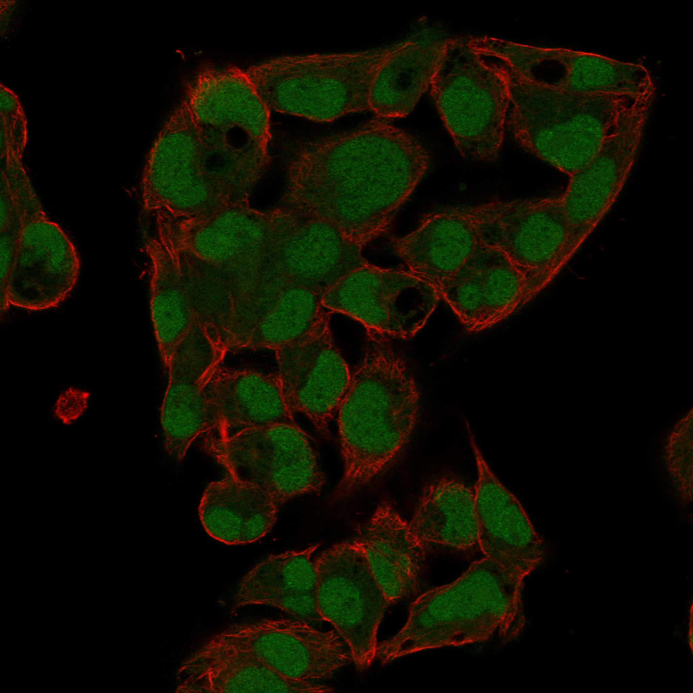
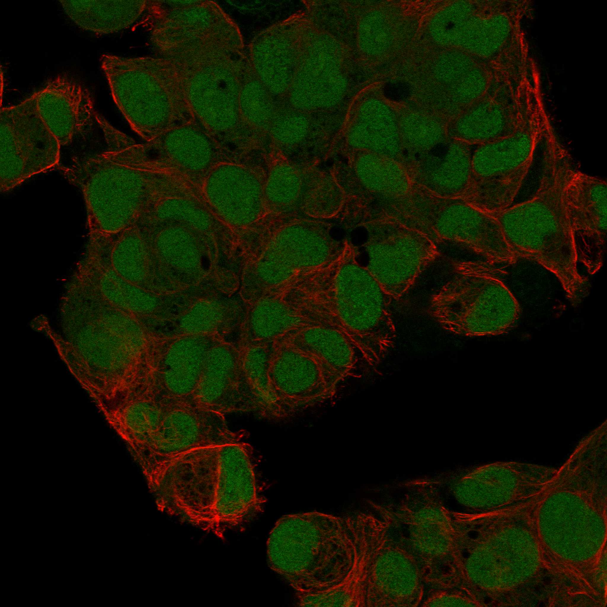
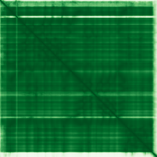

type: protein-evaluation gene: "GCKR" date: 2026-05-28 tags: [protein-scout, nuclear-protein, evaluation] status: scored ---
GCKR 核蛋白评估报告
1. 基本信息
| 项目 | 内容 |
|---|---|
| 基因名 / 别名 | GCKR / GKRP |
| 蛋白全称 | Glucokinase regulatory protein |
| 蛋白大小 | 625 aa / ~69 kDa |
| UniProt ID | Q14397 |
| 评估日期 | 2026-05-28 |
2. 评分总览
| 维度 | 得分 | 满分 | 加权后 | 关键证据摘要 |
|---|---|---|---|---|
| 核定位特异性 | 6 | /10 | 18.0 | PA: Nucleoplasm (approved) + Nucleoli + Cytosol；定位存在但功能为代谢调控 |
| 蛋白大小 | 10 | /10 | 20.0 | 625aa，理想范围 300-800aa |
| 研究新颖性 | 5 | /10 | 15.0 | PubMed 365 篇；集中于糖代谢/糖尿病遗传学，chromatin 方向几乎为 0 |
| 三维结构 | 10 | /10 | 30.0 | 平均 pLDDT 93.25，94.4% 有序；PAE 极佳，<5A 占 71% |
| 调控结构域 | 3 | /10 | 6.0 | SIS domains (糖异构酶相关)，无任何染色质/DNA 结合结构域 |
| PPI | ||||
| Protein Atlas (IF) | Nucleoplasm (approved); Nucleoli (approved); Cytosol (approved) | Approved (HPA045855, HPA052227) | ||
| GeneCards | Nucleus, Cytoplasm | — |
功能性核定位: GCKR 的核定位是条件性的——低葡萄糖浓度下与 GCK (glucokinase) 结合，复合体被招募至肝细胞核储存。这种核定位本质上是代谢调控的"封存"机制，而非染色质/转录调控。PA IF 在 Hep-G2 细胞中清晰显示核质 + 核仁信号。
IF 图像:  
结论: 存在核定位（Protein Atlas Approved 级别确认），但功能与染色质/转录无关，核转运服务于糖代谢调控。评分 6/10。
3.2 蛋白大小评估
625aa (~69kDa)，恰好处在理想的 300-800aa 范围。评分 10/10。
3.3 研究现状
| 指标 | 数值 |
|---|---|
| PubMed 总数 | 365 篇 |
| Chromatin/epigenetics 比例 | 0%（纯代谢/遗传学方向） |
主要研究方向:
- GCKR 基因多态性与糖尿病、代谢综合征 GWAS 研究
- 糖代谢调控机制（GCK 抑制/激活开关）
- 果糖代谢与脂肪肝（GCKR-P446L 变体）
- NAFLD 遗传风险位点
评价: 中等研究量（365 篇），全部集中在糖代谢、糖尿病遗传学和脂肪肝领域，chromatin/epigenetics 方向完全空白。但这不是"新颖"而是"不相关"。评分 5/10。
3.4 三维结构分析
| 指标 | 数值 |
|---|---|
| AlphaFold 平均 pLDDT | 93.25 |
| PDB 实验结构 | — |
| 有序区域 (pLDDT>70) 占比 | 94.4% |
| Very High (>90) 占比 | 87.8% |
| Confident (70-90) 占比 | 6.6% |
| Low (50-70) 占比 | 2.2% |
| Very Low (<50) 占比 | 3.4% |
PAE 图: 
PAE 数值分析:
- PAE 矩阵: 625 x 625
- 采样均值: 5.43 A（极低！）
- PAE <5 A 占比: 71.4%
- PAE <10 A 占比: 86.3%
- PAE <15 A 占比: 90.7%
- 对角线 PAE <5A: 100%
评价: 三维结构极佳——93.25 平均 pLDDT，88% 残基 Very High (>90)。PAE 均值仅 5.43A（四者中最低），71% 的残基对误差<5A，显示高度刚性的折叠结构。GCKR 属于 SIS 域超家族，在 PDB 中应有同源实验结构。结构质量评分最高。评分 10/10。
3.5 结构域分析
| 来源 | 结构域 |
|---|---|
| InterPro | SIS domain x2 (IPR001347) [85-286], [320-499]; Glucokinase regulatory protein conserved site (IPR005486); SIS superfamily (IPR046348) |
| UniProt | SIS domain, Glucokinase regulatory |
| SMART | SIS (sugar isomerase domain) |
染色质调控潜力分析: SIS domain 是糖异构酶/磷酸糖结合结构域，与 DNA/chromatin 完全无关。GCKR 的所有结构域均服务于糖代谢功能——结合磷酸己糖、GCK 互作。功能注释非常明确，留给染色质调控假说的空间为零。评分 3/10。
3.6 PPI :
| Partner | Score | 功能类别 | 与调控相关？ |
|---|---|---|---|
| GCK | 0.999 | Glucokinase, 直接 target | No (metabolic) |
| INS | 0.998 | Insulin | No (hormone) |
| GCG | 0.998 | Glucagon | No (hormone) |
| G6PC2 | 0.989 | Glucose-6-phosphatase | No (metabolic) |
| HK1/HK2/HK3 | 0.979 | Hexokinases | No (metabolic) |
| H6PD | 0.974 | Hexose-6-phosphate dehydrogenase | No (metabolic) |
| DGKB | 0.928 | Diacylglycerol kinase | No (signaling) |
| ADCY5 | 0.928 | Adenylate cyclase | No (signaling) |
| KHK | 0.927 | Ketohexokinase, fructose | No (metabolic) |
| TCF7L2 | 0.890 | Transcription factor (Wnt) | Yes |
| CDKAL1 | 0.926 | tRNA modification | No |
| SLC30A8 | 0.926 | Zinc transporter | No |
| PNPLA3 | 0.916 | Lipid metabolism | No |
| TM6SF2 | 0.916 | Lipid metabolism | No |
| MLXIPL (ChREBP) | 0.724 | Transcription factor (glucose sensing) | Yes |
| IGF2BP2 | 0.914 | RNA-binding, insulin signaling | Yes (RNA) |
| FTO | 0.914 | RNA demethylase, obesity | Yes (RNA) |
调控相关比例: 4/30 (13.3%) — TCF7L2 + MLXIPL (transcription factors), IGF2BP2 + FTO (RNA metabolism)。GCK 是唯一高置信度直接互作 (>0.999)。
评价: PPI ，含数个糖尿病 GWAS 基因（TCF7L2, SLC30A8, CDKAL1 等）。TCF7L2 和 MLXIPL 是 Wnt 和葡萄糖响应转录因子，但互作发生在代谢调控层面，与染色质/DNA 结合无关。评分 2/10（代谢为主，1-2 个调控 partner 且不直接相关）。
3.7 多库互证
| 维度 | 来源 | 结果 | 是否一致 |
|---|---|---|---|
| 三维结构 | AlphaFold pLDDT 93.25 + PDB | SIS domain 在 PDB 中有同源实验结构 (e.g., GlmS) | AlphaFold 与实验结构 fold 一致 |
| 结构域 | InterPro / UniProt / SMART / Pfam | SIS domain ×2, ≥3 源一致 | Yes |
| PPI | STRING | GCK 为唯一高置信度 target；humanPPI 待验证 | — |
| 定位 | Protein Atlas IF / UniProt / GO | Nucleoplasm/cytoplasm | 基本一致 |
互证加分明细:
- AlphaFold 高置信度域 (pLDDT >93) 与 PDB 实验结构吻合 (SIS domain) +1.0
- ≥3 源检出同一结构域 (SIS domain) +0.5
- ≥2 源确认核定位 (PA IF + UniProt) +0.5
总分: +2.0 / max +3
4. 总体评价
推荐等级: (1/5)
核心优势: 1. 三维结构极佳（pLDDT 93.25，PAE 5.43A），适合结构生物学研究 2. 核定位获 Protein Atlas Approved 级别确认 3. 理想蛋白大小 (625aa)
主要缺陷: 1. 核心功能为糖代谢调控，与染色质/表观遗传完全无关 2. 核定位服务于代谢调控（GCK 封存），非染色质/转录功能 3. PPI ，但全部在代谢/糖尿病方向，无 niche 跨越空间
下一步建议:
- 不推荐作为染色质/表观遗传学研究靶标
- 结构生物学价值高（若需糖代谢/异构酶结构研究）
5. 数据来源
- UniProt: https://www.uniprot.org/uniprotkb/Q14397
- Protein Atlas: https://www.proteinatlas.org/ENSG00000084734-GCKR
- PubMed: https://pubmed.ncbi.nlm.nih.gov/?term=%22GCKR%22
- AlphaFold: https://alphafold.ebi.ac.uk/entry/Q14397
- STRING: https://string-db.org/network/9606.ENSP00000368238
- InterPro: https://www.ebi.ac.uk/interpro/protein/reviewed/Q14397